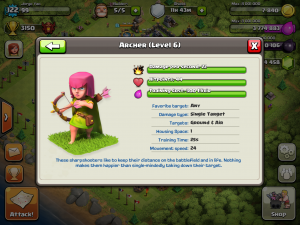
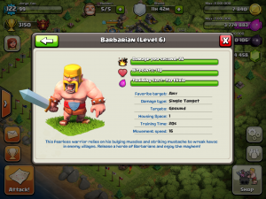
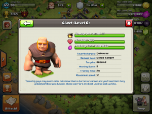
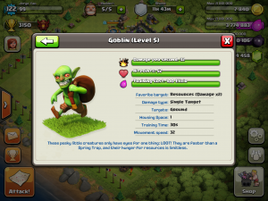
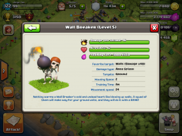

Basic overview of units, spells, defense layouts, and walls
Time to get down to the basics, fellow Clasher.
So you�re ready to play Clash, and find that there�s a ton of information out there already. Supercell has a wiki page that describes pretty much everything, and there are thousands of videos and guides out there on Youtube. What do you do and which one do you follow?
I�m here to tell you not to waste your time. There�s only a couple of things you really need to watch out for in the beginner ranks.
Starting off in the game, you�ll notice an automatic shield is already up. Be patient and don�t break that shield by attacking � the worst thing you can do in the game is break a shield too early. I�ll get into more in depth shield strategies later, but trust me � patience and shielding is the key to gaining on the leaderboards.

Use the gems that are provided on additional builder huts only. This is important � builder huts are an investment that will help you snowball into the intermediate ranks. Don�t use those gems on other upgrades, even if some of them may look flashy or cool. Stick to the basics and go with the builder huts only.
When you first start out, gold and elixir collectors are important. You�ll want to be patient here too � don�t upgrade those too quickly as other others will want to raid your base and steal your resources. Make sure you upgrade your base defenses first. By using your gold to upgrade collectors, you sacrifice on your base�s defenses and end up losing all those resources anyways when you get raided � this is a huge mistake that I see a lot of players making. Make sure you don�t do the same! What about gold vs. elixir? Gold is far more important in the early levels because 90% of the buildings use gold and not elixir, so focus on getting gold over elixir at this time.

The key to the beginner ranks is to upgrade everything in your base as much as possible so you have the strongest defenses for that Town Hall level. Only after you upgrade all your defenses should you consider moving up a Town Hall. Here are some tips for upgrading your defense units:
- Mortar towers first � these have massive splash damage are the cornerstone to any good defense in the early levels. Get these upgraded first and as fast as possible. You�ll have the ability to build additional mortars as you advance your Town Hall level, but make sure all your current mortars are upgraded before you advance your Town Hall level.
- Wizard towers next � these towers always provide splash damage when they fire. As you may have guessed, splash damage gives you the most efficient defense in these levels so you should really focus on those mortar and wizard towers. Much like mortar towers, you�ll have the ability to build additional ones as you advance your Town Hall level, but make sure all your current wizard towers are upgraded before you advance your Town Hall level.
- Archer towers next � these have great range and attack both air and ground units. In the beginner ranks, you won�t really encounter air units very much so many people recommend against upgrading Archer towers. This is wrong � even without air units attacking you, the archer towers are worth it for their long range.
- Cannons next � these can only attack ground units, which you will see the most of at these levels. I would treat these in the same priority as archer towers actually. They provide an extra layer of defense to protect your precious resources.

The next topic that I�m going to stress here is the use of walls. Walls are extremely important to protecting your buildings against attackers. You will need a free builder (one who is not currently upgrading anything) in order to build or upgrade walls. This is important so listen up � if your defense is open, use all your remaining gold on walls once all but one builder is free, prior to logging off. Why is this important? This prevents people from looting all your gold because you spent it all before logging off, so there is no gold to actually loot in your base! If you happen to be saving up your gold in storages, make sure your defense is good enough to defend � otherwise just listen to me and spend any gold you have on walls before you leave the game.
What about army camps? You can upgrade your army camps following the same guidelines as towers � making sure you upgrade everything before you advance to a higher Town Hall. However, I don�t think army camps at the beginner levels are a priority at all, since army camps are used strictly for offence and in the beginner ranks, defense is most important. You�re not strong enough to attack other people, so you want to protect your resources until all your units are upgraded before you think about attacking.

Factories � there are two types of factories � a research factory for you to upgrade units, and a spell factory for you to manufacture spells. Neither of these are important in the beginner levels to be perfectly honest.
In your research factories, you�ll be able to upgrade your giants, wallbreakers, archers, barbarians, and goblins. However, like I stated before, you should only upgrade units when you�re far enough along in your defenses and strong enough to start thinking about attacking. The bases you�ll be paired up with in any attack scenario will only be 1 Town Hall above you max � so make sure at the very minimum your troops are strong enough to take out your own base�s fully upgraded defenses before you start looking for others. By not upgrading Town Halls too early, stronger players won�t be able to find you � which is why you want to upgrade everything before moving up Town Halls.

Spells factories should essentially be ignored in the early levels. Spells take way too long to cook and they cost too much. In fact, even the cheapest spell used in a raid would negate any profit when attacking for resources. I�ll cover spell usage in the intermediate and advanced sections of this guide later on.